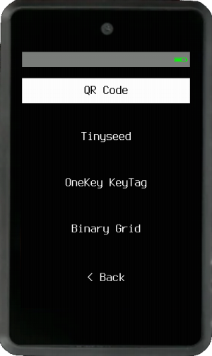
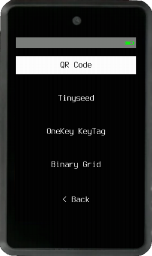
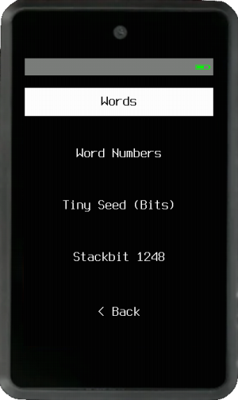
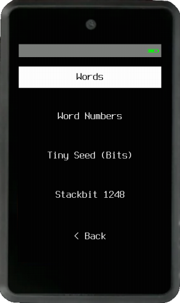
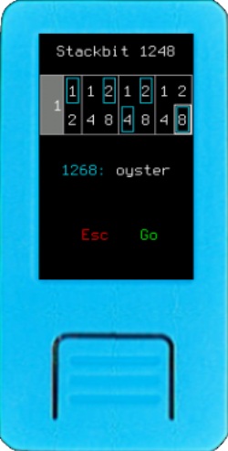
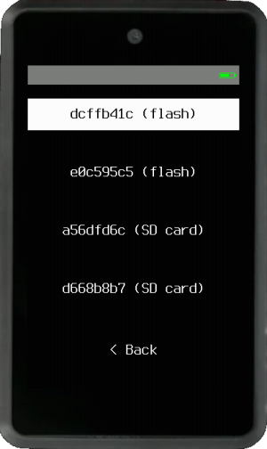
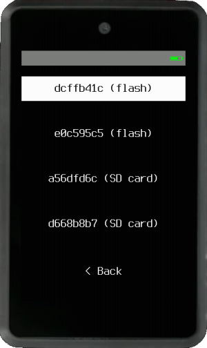
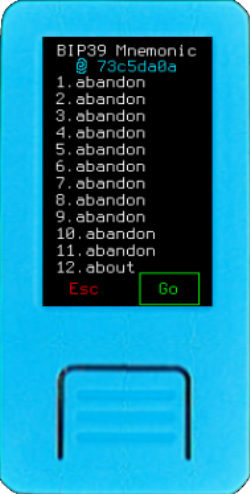
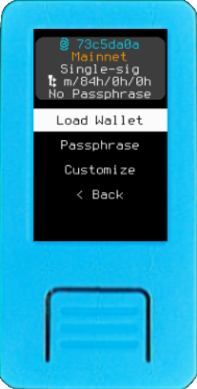

Loading a Mnemonic
Once you have either a 12 or 24-word BIP39 mnemonic, choose Load Mnemonic on Krux's start menu (aka login menu), and choose an input method:


Input Methods¶
 

Via Camera¶
You can choose to use the camera to scan a QR code, Tiny Seed, OneKey KeyTag or a Binary Grid.
Tip: You can hold down the ENTER button of the M5StickV, Maix Amigo or WonderMV to turn on their LED light to potentially increase visibility. All cameras have an anti-glare mode, use it to capture images from high brightness screens or with incident light. Enable/disable anti-glare by pressing PAGE button while scanning.
QR Code¶
It's unpleasant having to manually enter 12 or 24 words every time you want to use Krux. To remedy this you can instead use the device's camera to read a QR code containing the words. Krux will decode QR codes of four types:
- Plain text QR: The mnemonic words encoded as text, with words separated by spaces.
- SeedQR: Basically, it is the mnemonic words of the respective BIP39 numbers concatenated, encoded as text.
- Compact SeedQR: Basically, it is the mnemonic words bits concatenated as bytes.
- Encrypted Mnemonic: A specification created by Krux that encrypts the mnemonic words bits and adds some information about the encryption used.
After opening a wallet via one of the methods available you can use Krux to backup the mnemonic as QR code, transcribe them to paper or metal using the transcription helpers or attach a thermal printer to your Krux and print out the mnemonic as QR. Check out the printing section for more information. You can also use an offline QR code generator for this (ideally on an airgapped device).
Tiny Seed, OneKey KeyTag or Binary Grid¶
Tiny Seed, Onekey KeyTag and others directly encode a seed as binary, allowing for a very compact mnemonic storage. Krux devices have machine vision capabilities that allow users to scan these metal plates and instantly load mnemonics engraved on them (this feature is not available in Krux Android app).
To properly scan, place the backup plate over a black background and paint the punched bits black to increase contrast. You can also scan the thermally printed version, or a filled template. You can find some examples of mnemonics encoded here. Alternatively, you can find templates to scan or print here.
Via Manual Input¶
 

Manually type Words, Word Numbers, Tiny Seed (toggle the bits or punches) or Stackbit 1248.
Words¶


Enter each word of your BIP39 mnemonic one at a time. Krux will disable impossible-to-reach letters as you type and will attempt to autocomplete your words to speed up the process.
Word Numbers¶


Decimal¶
Enter each word of your BIP39 mnemonic as a number (1-2048) one at a time. You can use this list for reference.
Hexadecimal and Octal¶
You can also enter your BIP39 mnemonic word's numbers (1-2048) in hexadecimal format, with values ranging from 0x1 to 0x800, or in octal format, with values ranging from 01 to 04000. This is useful with some metal plate backups that uses those formats.
Tiny Seed (Bits)¶


Enter the BIP39 mnemonic word's numbers (1-2048) in binary format, toggling necessary bits to recreate each of the word's respective number. The last word will have checksum bits dynamically toggled while you fill the bits.
Tip: You can use this screen to generate a mnemonic by flipping a coin:
- Flip a coin, if it is heads, mark the first space (value 1) of the word, if it is tails do nothing. Repeat this step for each space up to 1024 (if you flip 11 tails in a row, just leave the 2048 square marked).
- The last word has the checksum, you will do as you did with the other words, the only difference is that you cannot set some spaces, they are calculated automatically. For 12 words you will flip the coin only 7 times, for spaces 16, 32, 64, 128, 256, 512 and 1024. For 24 words you will flip the coin only 3 times, for spaces 256, 512 and 1024.
Stackbit 1248¶


Enter the BIP39 mnemonic word's numbers (1-2048) using the Stackbit 1248 metal plate backup method, where each of the four digits of the word's number is a sum of the numbers marked (punched) 1, 2, 4, or 8. For example, to enter the word "oyster", number 1268, you must punch (1)(2)(2,4)(8).
From Storage¶
 

You can also retrieve encrypted mnemonics previously stored on device's internal memory or external (SD card). To load them you'll have to enter the same key you used to encrypt them.
Confirm Wallet Setup¶
Confirm Mnemonic Words¶


Once you have entered your mnemonic, you will be presented with the full list of words to confirm. A 12 word has only 4 checksum bits, so it has a 1 in 16 chance (6,25%) of still being valid even if you mistype a word. A 24 word phrase has 8 checksum bits, so it only has 1 in 256 chance (~0,4%) of still being valid if you mistype a word.

 If you see an asterisk (
If you see an asterisk (*) in the header, it means this is a double mnemonic.
(Optional) Edit Mnemonic¶


If you make a mistake while loading a mnemonic, you can easily edit it. Simply touch or navigate to the word you want to change and replace it. Edited words will be highlighted. If the final word contains an invalid checksum, it will appear in red. If your checksum word is red, please review your mnemonic carefully, as there may be an error.
Confirm Wallet Attributes¶


After confirming your mnemonic, a screen with an information box at the top with the wallet's attributes is shown. If they are as expected, just press Load Wallet. If you need to change something you may customize the wallet by setting a Passphrase or using the Customize button.
The Attributes:¶
Fingerprint¶
-
73c5da0a: The BIP32 master wallet's fingerprint helps you make sure you entered the correct mnemonic and passphrase (optional) and will load the expected wallet. The fingerprint is the best checksum you can have, it's good to note it down.
Network¶
Mainnet: Check if you are loading aTestnetorMainnetwallet.
Policy Type¶
- Check the wallet's policy type:
Single-sig,Multisig,Miniscript, orTR Miniscript(Taproot).
Derivation Path¶
-
m/84h/0h/0h: The derivation path is a sequence of numbers, or "nodes", that define the script type, network, and account index of your wallet.- Script Type
84h: The first number defines the script type. The default is84h, corresponding to a Native Segwit wallet. Other values include:44hfor Legacy49hfor Nested Segwit86hfor Taproot48hfor Multisig
- Network
0h: The second number defines the network:0hfor Mainnet1hfor Testnet
- Account Index
0h: The third number is the account index, with0hbeing the default. - Additional: For multisig wallets, a fourth node with the value
2his added to the derivation path.
Default Miniscript derivation path is the same as for multisig:
m/48'/0h/0h/2h, but they can be fully customized - Script Type
Passphrase¶
No Passphrase: Informs if the wallet has a passphrase. Adding or changing the passphrase results in a completely different wallet and fingerprint.
Customize Wallet¶
It is possible to change any of the wallet's attributes (it will be possible to change them later too, after loading). To load it faster next time, some default wallet attributes can be set in settings, they are: Network, Policy Type and Script Type.
Passphrase¶


You can type or scan a BIP39 passphrase. When typing, swipe left or right to change keypads if your device has a touchscreen. You can also hold the button PAGE or PREVIOUS when navigating among letters while typing text to fast forward or backward. For scanning, you can also create a QR code from your offline passphrase using the create QR code tool.
Customize¶


This button opens a screen to change the Network, Policy Type, Script Type, and Account of the wallet. If Policy Type is Miniscript, you will be able to enter a custom derivation path.
When everything looks good, press Load Walletand you will go to the main menu...